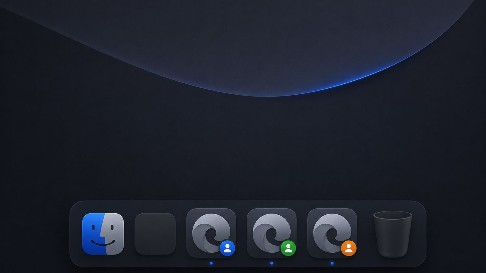

Superdock
SuperdockHow to get a separate Dock icon for each Chrome profile on a Mac

Short answer: the Mac's Dock shows one icon per app, and all your Chrome profiles run inside one app, so you get one icon. There are three ways around it. A free launcher made in Automator opens the right profile but does not give it its own icon while it runs. A separate copy of Chrome per profile gives real icons and costs you memory and a second sign-in. A Dock that reads Chrome's profiles, which is what Superdock is, shows one icon per profile from the Chrome you already have.
Why there is only one Chrome icon
The Dock tracks apps, not accounts. Chrome opens your work, client and personal profiles inside one process, so the Dock sees one app and stacks every window under it. Click the icon and you get whichever window was used last. Right-click and every window from every profile is in one list. Apple's Dock has no setting for this.
The free way: a launcher for each profile
This takes about two minutes per profile and installs nothing.
- Find the profile's folder name. In that profile, open
chrome://versionand read the last part of Profile Path. It will beDefault,Profile 1,Profile 2and so on. It is not the name you gave the profile. - Make the launcher. Open Automator, choose New, then Application. Add the action Run Shell Script and paste this, with your folder name:
open -na "Google Chrome" --args --profile-directory="Profile 1" - Save it and drag it to the Dock. Save it in Applications with a name like Chrome Work. To change its icon, copy an image, select the launcher in Finder, press Command-I, click the small icon at the top of the window and paste.
What you get is a button that opens a new window in the right profile. What you do not get is a separate icon for the windows once they are open: they still collect under the one Chrome icon, because Chrome is still one app. Every click also opens another new window, so you cannot use the launcher to get back to a window you already have.
A separate copy of Chrome per profile
Chrome can be started with its own data folder, using --user-data-dir. macOS then treats it as a different app with its own icon, and apps such as Parallel Spaces set this up for you. The icons are real. The cost is that each copy is a full Chrome with its own memory, and you sign in to everything again inside each one. In our measurement, three copies used about 2.8 times the memory of one Chrome with three profiles.
A Dock that knows about profiles
Superdock replaces the Dock with one that draws its own icons. It reads Chrome's list of profiles and works out which window belongs to which profile from the window title, so each profile gets its own icon with its picture, and only its windows behind it. Chrome itself is untouched: one app, the logins you already have.
- Download Superdock and drag it to Applications.
- Allow Accessibility when it asks. That is how it sees other apps' windows. It is the only permission it needs.
- Open Chrome as usual. Each profile gets an icon when its first window opens. Right-click one and choose Options, then Keep in Dock, to pin it.
Clicking a profile's icon brings back its most recent window, or opens one if it has none. Hovering shows only that profile's windows.
What it costs you: it is a different Dock from Apple's, it is not on the Mac App Store, and the profile icons are $7.99 once after 14 days. The dock itself stays free. It splits profiles for Google Chrome only.
Which one to pick
| Method | Cost | Own icon while open? | Keeps your sign-ins? |
|---|---|---|---|
| Automator launcher | Free | No | Yes |
| Separate copy of Chrome | Free with a script, or a small paid app | Yes | No, you sign in again |
| Superdock | $7.99 once | Yes | Yes |
If you open a second profile a few times a week, the launcher is enough. If one profile must share nothing with the others, run a separate copy. If you move between profiles all day, that is the case I built Superdock for. The comparison page lists the other apps that deal with profiles and what each does better.
Frequently asked questions
Does this work with Brave, Edge or Arc?
The launcher works for any Chromium browser if you change the app name in the command. Superdock splits profiles for Google Chrome only. The others show as ordinary icons.
Does Superdock need Full Disk Access?
No. Accessibility is the only required permission. Screen Recording is optional and adds live thumbnails to the window previews.
What happens after the 14 days?
The dock keeps working for free. The separate profile icons need a licence, $7.99 once for up to five Macs.
Download free The dock is free. Chrome profile icons: 14 days free, then $7.99 once.